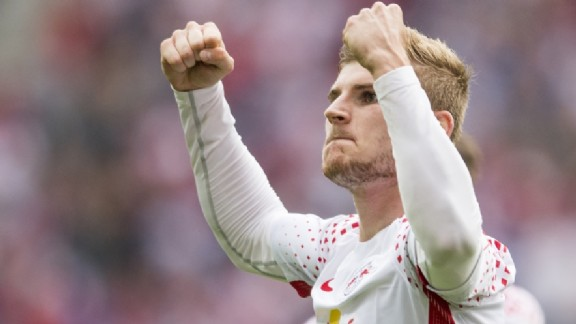

RB Leipzig ongerust na uitvallen door lawaai Besiktas-fans: ‘Maken ons zorgen’
« Naar Nieuws  Volgende »Timo Werner sluit niet aan bij de nationale ploeg van Duitsland in aanloop naar de WK-kwalificatiewedstrijden tegen Noord-Ierland en Azerbeidzjan. De spits van RB Leipzig moest tijdens het Champions League-duel met Besiktas (2-0 verlies) vroegtijdig naar de kant. De Duitser had ademproblemen, had last van het lawaai van de supporters in Istanbul en kampt met vertigo, dat ook wel draaiduizeligheid wordt genoemd.
Werner kreeg afgelopen dinsdag door het oorverdovende geluid problemen met zijn gezondheid. Tegen 1. FC Köln werd hij buiten de selectie gehouden en ook voor de interlands met Duitsland moest hij zich afmelden. "Het is onmogelijk om nu over het spelen van wedstrijden na te denken", aldus trainer Ralph Hasenhüttl, die zegt met bondscoach Joachim Löw gesproken te hebben over de situatie van Werner: "We moeten ervoor zorgen dat Timo weer gezond wordt."
"Hij ondergaat momenteel enkele onderzoeken, maar spelen gaat voorlopig niet gebeuren", aldus de coach over Werner, die in de belangstelling staat van onder meer Real Madrid en Barcelona. Ralf Rangnick, technisch directeur van RB Leipzig, is er niet gerust op, zo maakt hij duidelijk in gesprek met Kicker: "We maken ons zorgen. Dat is duidelijk. Het heeft geen zin hem mee te sturen met het Duitse team, omdat we nog geen definitieve diagnose hebben."